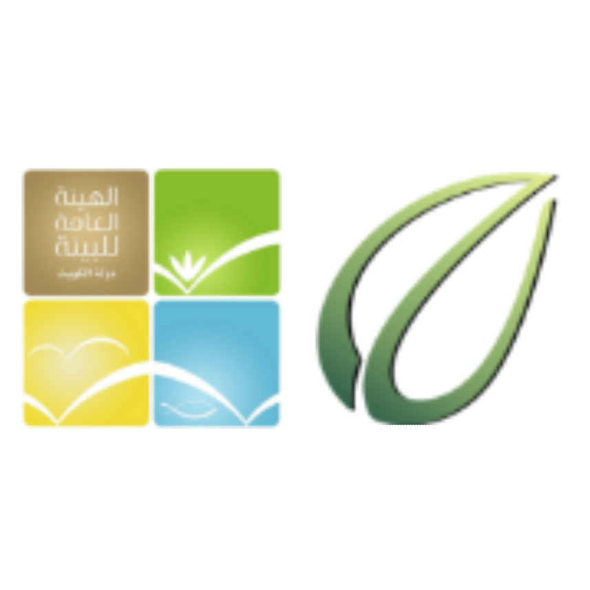
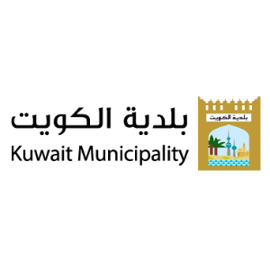
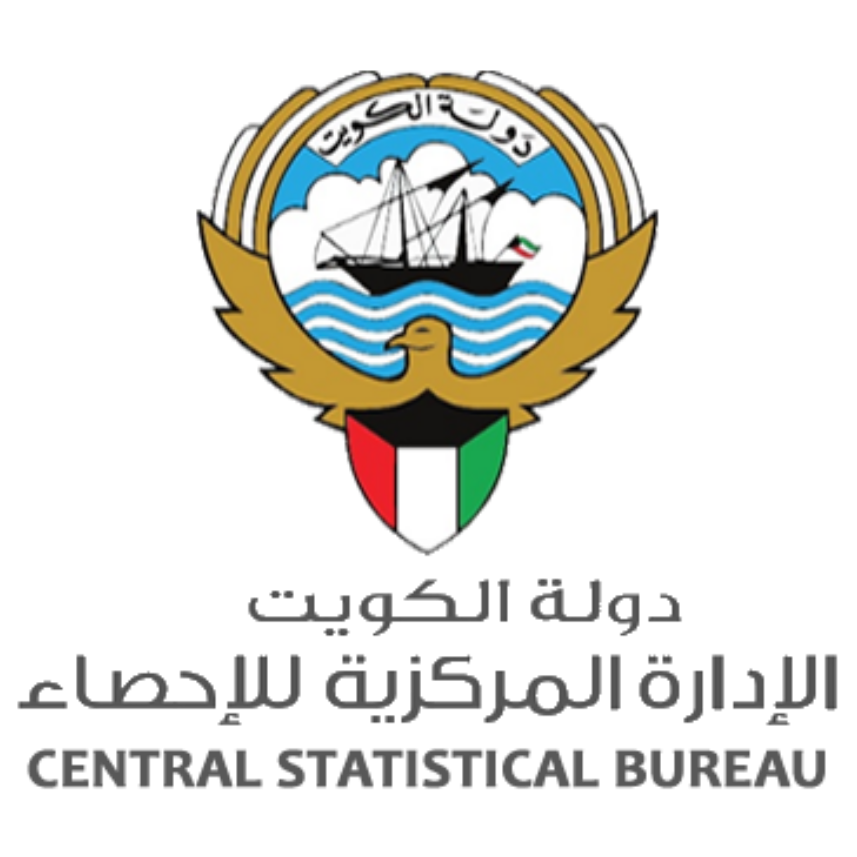
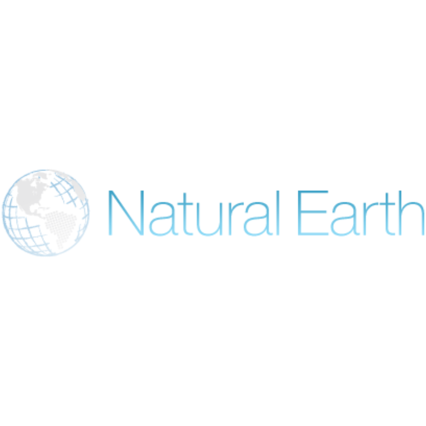
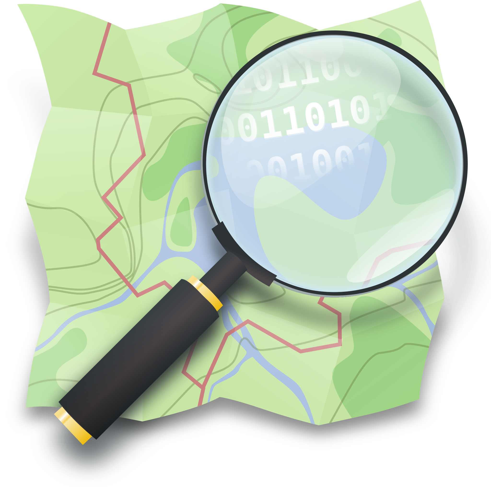
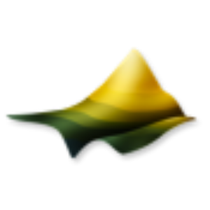

المنصة الجغرافية الكويتية
منصة البيانات والمعلومات الجغرافية المفتوحة لدولة الكويت
منصة كويتية تطوعية لمشاركة البيانات والمعلومات الجغرافية ونشر المعرفة
إعداد: د. عبداللطيف فهد الياقوت
جامعة الكويت - كلية العلوم الاجتماعية
قسم الجغرافيا
منصة كويتية تطوعية لمشاركة البيانات والمعلومات الجغرافية ونشر المعرفة
إعداد: د. عبداللطيف فهد الياقوت
جامعة الكويت - كلية العلوم الاجتماعية
قسم الجغرافيا

الهيئة العامة للبيئة
بلدية الكويت
الإدارة المركزية للإحصاء
Natural Earth
OpenStreetMap
OpenTopography